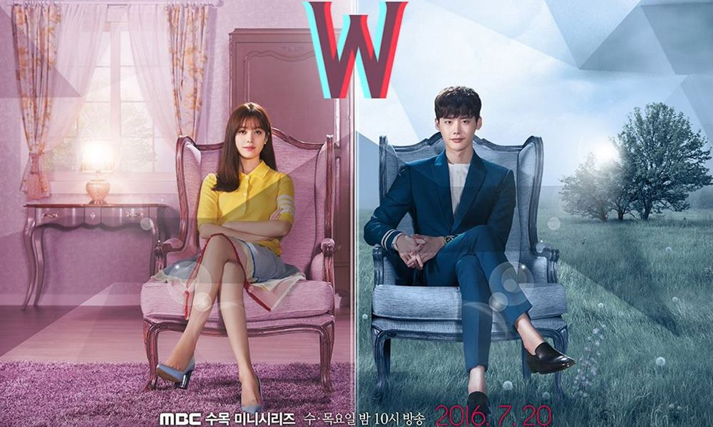
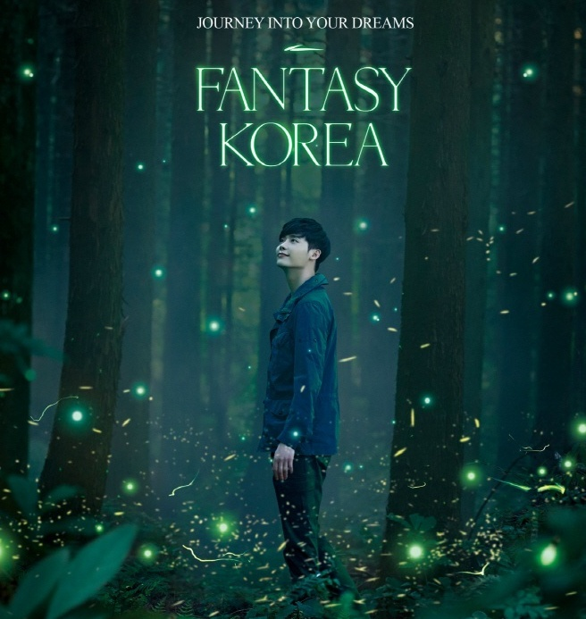

劇情
2016年7月20日起播出的浪漫電視劇，劇情講述現實世界中的女醫生吳妍珠偶然地進入了人氣漫畫《W》的世界，與漫畫主人公姜哲相遇後發生往來現實和虛幻中的懸疑愛情故事;取Who、Why開頭當縮寫，以查出是誰、為甚麼犯下罪行為目標。
主要演員
李鍾碩 (飾 姜哲)
男主角，花美男外表，天才頭腦，一家四口被慘殺，他雖逃過一劫，卻也成為最大嫌疑人，只能銷聲匿跡。十二年後突然以財閥身份回歸，建立名為W的調查媒體，以100億韓元懸賞當年的兇手。 |

(按圖可進個別維基百科) |
|---|---|
韓孝周 (飾 吳妍珠)
女主角，醫生，父親是最有名的漫畫家，然而父親卻在熱門漫畫《W》最終回的截稿日突然失蹤。妍珠得知《W》的主角公姜哲將會在最終回死去，她懷疑父親的失蹤與漫畫的結局有關，於是來到父親的房間尋找線索，卻被姜哲拉進了他生活的世界。 |
劇照


2017韓國大使李鍾碩
(圖片均分八格皆有韓國觀光短片)
 回頂部